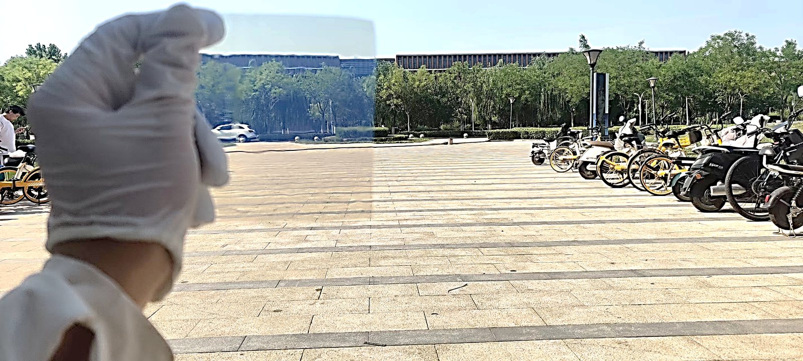
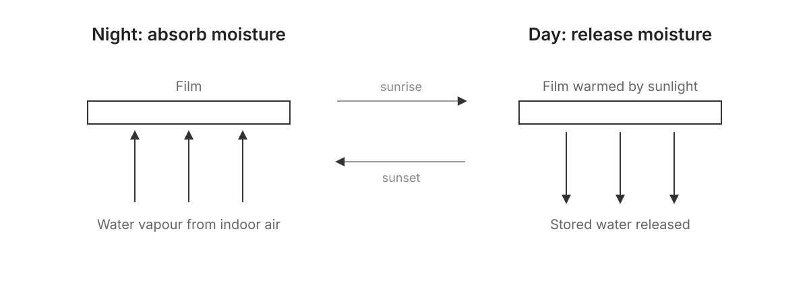

HKIE 80th Anniversary · Future-Ready Engineering Award
Future-Ready Smart Facades
A synergistic window retrofit that protects Hong Kong's existing buildings against solar heat and humidity, without replacing the glass and without external power.

01 The challenge
Windows admit solar heat and humidity into Hong Kong's buildings
Highly glazed buildings dominate Hong Kong. Solar gain through the glazing and persistent indoor humidity increase the air-conditioning load, while replacing existing glass is costly and disruptive.
02 Concept
Retrofit the window, retain the glass
On the pane
A clear coating that blocks solar heat
Applied directly to existing glazing, it transmits daylight while blocking solar heat.
At the window edge
A film that draws moisture from the air
Installed at the window edge, it absorbs indoor moisture and is regenerated by sunlight without external power.
Each technology has been developed and tested on its own; together they form one window retrofit.
03 Solar-selective coating
Transparent to daylight, selective against solar heat
Nanoparticles in the coating let visible light pass, absorb the invisible near-infrared part of sunlight and radiate that heat away. Indoor daylight and outward views are preserved.


Peak temperature at the sunlit spot, bare-glass room vs. coated room. In outdoor tests the coating also ran up to 6.5 °C cooler than a commercial window film, while letting 78.4% of visible light through.
04 Dehumidifying film
Absorbs moisture at night, regenerated by sunlight by day
The film absorbs water vapour from indoor air. Solar heating then releases the stored water, restoring the film for the next cycle without any electrical input.

Relative humidity after one hour in a test chamber, against 83.3% with the same mass of silica gel. A night-privacy version (MRLR) also turns translucent after dark and shades sunlight by day.

05 Impact for Hong Kong
From a single window to a whole building
For an HKJC building, the team compared coating the existing windows with replacing them with vacuum low-E glass.
Payback period. Whole building, single glazing: coating HKD 119,845 for a 5.06% energy saving; replacement HKD 18,000,000 for 11.27%. For a Hong Kong glass curtain-wall building, the coating is modelled to cut air-conditioning energy by about 25%.
- ValidatedLaboratory and test-room performance
- AssessedRetrofit study of an HKJC building
- OutlookApplication across Hong Kong's glazed building stock

Watch
Smart window films that help regulate heat and humidity indoors
PolyU Research and Innovation Office, with Prof. Jerry Yan.
Watch on YouTubeResearch team
Department of Building Environment and Energy Engineering, The Hong Kong Polytechnic University.
- Ir Prof. YAN Jinyue JerryChair Professor
- Dr LIU JunweiResearch Assistant Professor